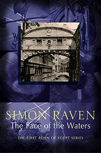
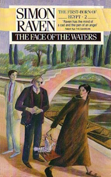
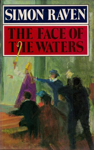

An undergraduate of Lancaster College; younger son of Peter Morrison.
Captain the Most Honorable Marquess Cantelope of the Aestuary of the Severn.
His secretary, a 'Jermyn Street' man.
The Marchioness Canteloupe
'Baby': neé Llewyllyn; niece to Isobel Stern, and cousin to Rosie and Marius.
Josephine ('Jo-Jo') Guiscard
Her friend. Wife of Jean-Marie Guiscard.
Headmaster of Oudenarde House. Previously appeared in Fielding Gray. Proprietress (with Fielding Gray) of Buttock's Hotel.
A sick man. Previously a professional gambler and property dealer.
Provost of Lancaster College, Cambridge, father of Lady ('Baby') Canteloupe, brother-in-law of Isobel Stern being married to her sister Patricia.
Private Secretary to Provost Llewyllyn.
An amateur scholar; uncle, through his dead sister, to Jo-Jo Guiscard.
MP, 'Squire of Luffham by Whereham. Father to Jeremy.
Undergraduate of Lancaster College, and page to 'Greco' Barraclough after the Maniot custom.
An antiquarian, husband to Jo-Jo.
Matron, Sister and Staff Nurse
Of Doctor La Soeur's Nursing Home.
An undergraduate of Lancaster College; Donald Salinger's adopted daughter.
Theodosia ('Thea') Salinger
An undergraduate of Lancaster College; Carmilla's twin.
School friend of Tessa Malcolm, and daughter to Gregory and Isobel Stern. Sister to Marius and sister-in-law to Sir Thomas Llewyllyn.
Servant to Ptolemaeos Tunne.
Servant to Ptolemaeos Tunne.
A stockbroker and honest soldier.
Fellow of Lancaster College, a Ciceronian.
Ivan ('Greco') Barraclough
An anthropologist, Fellow of Lancaster College.



Marius Stern, the wayward son of Gregory Stern, has survived earlier escapades and is safely back at prep school - assisted by his father's generous contribution to the school's new shooting range. Fielding Gray and Jeremy Morrison are returning home, via Venice, where they encounter the friar, Piero, an ex-male whore and a figure from a shared but distant past.
Back in England, at the Wiltshire family home, Lord Canteloupe is restless. He finds his calm disturbed by events; the arrival of Piero, Jeremy's father's threat to saddle his son with the responsibility of the family estate and the dramatic resistance of Gregory Stern to attempted blackmail.